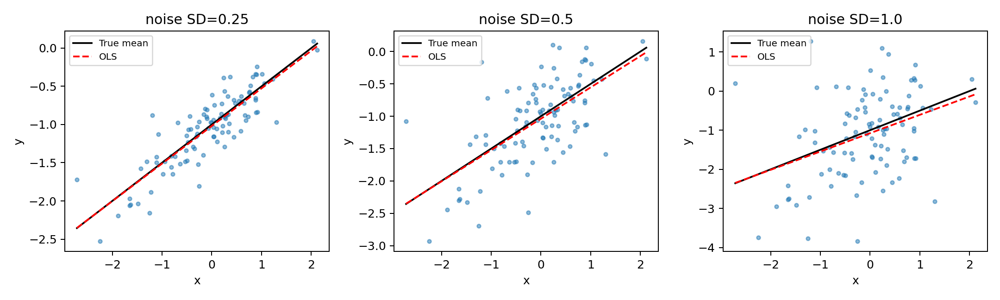

代码 3.7-11 · 第 13 题：噪声尺度与估计不确定性
按完整 Notebook 的顺序运行；本块可能依赖前面的变量。3.6—3.7包含教材真实数据与模拟实验；全样本统计分析不等于独立测试评估。
逐步读代码
原题噪声方差0.25对应标准差0.5。先固定x和一组标准正态噪声z，再按sigma缩放；因此三种情境只改变噪声尺度，便于公平比较，也等价于每种情境从相同种子按相同顺序重新生成。*fitted13.params在列表中展开两个系数，置信区间同理。column_stack把常数、x、x²按列拼成设计矩阵，索引2对应二次项。
实际运行输出
sigma b0 b1 b0_low b0_high b1_low b1_high 0.25 -1.01901 0.49215 -1.06889 -0.96912 0.43378 0.55051 0.50 -1.03801 0.48429 -1.13778 -0.93824 0.36757 0.60102 1.00 -1.07603 0.46858 -1.27556 -0.87649 0.23513 0.70203 base quadratic p: 0.9587574912263714
